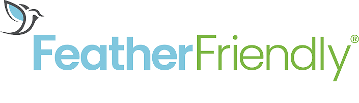
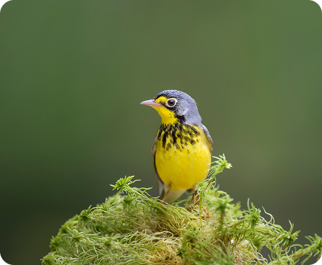

Why Do
Bird-Glass
Collisions
Happen?
Bird collisions with glass are one of the most significant human-related threats to birds. Over a billion birds die every year in the US alone after colliding with glass windows.

Birds don’t ‘see’ glass the way humans do. Clear and reflective glass can appear invisible to birds, or reflect sky, trees, and open space in ways that make it look safe to fly through.
As a result, birds cannot recognize it as a solid object and fly into it, often with fatal results. They either die on the spot or suffer serious internal injuries that result in death later.
The good news is that this is a problem with proven solutions.
Bird-safe glass treatments can make windows visible to birds while maintaining the appearance and function people expect from their buildings.
We are proud to offer trusted bird collision prevention solutions from Feather Friendly.
About
Feather
Friendly
Founded in 2006
Feather Friendly has been leading the bird-safe building movement through research-driven innovation, practical products, and partnerships across North America and beyond.
The company began with a simple goal: to create an effective, accessible solution that prevents bird-window collisions. Since then, it has grown into a globally recognized name in bird collision deterrence, trusted by homeowners, architects, property managers, and conservation organizations.
Tested by leading conservation organizations, including the American Bird Conservancy and Dr. Daniel Klem, Jr., Feather Friendly products meet or exceed published bird-friendly standards and guidelines worldwide.
Our Bird-Safe Solutions
Two proven solutions to help make glass visible to birds and reduce collision risk, depending on your project needs.

Feather Friendly
Visual Markers
A proven visual marker solution for retrofit and new construction applications.

Bird Divert
Clear
UV Markers
A scientifically tested UV solution designed for projects where a more subtle appearance is preferred.